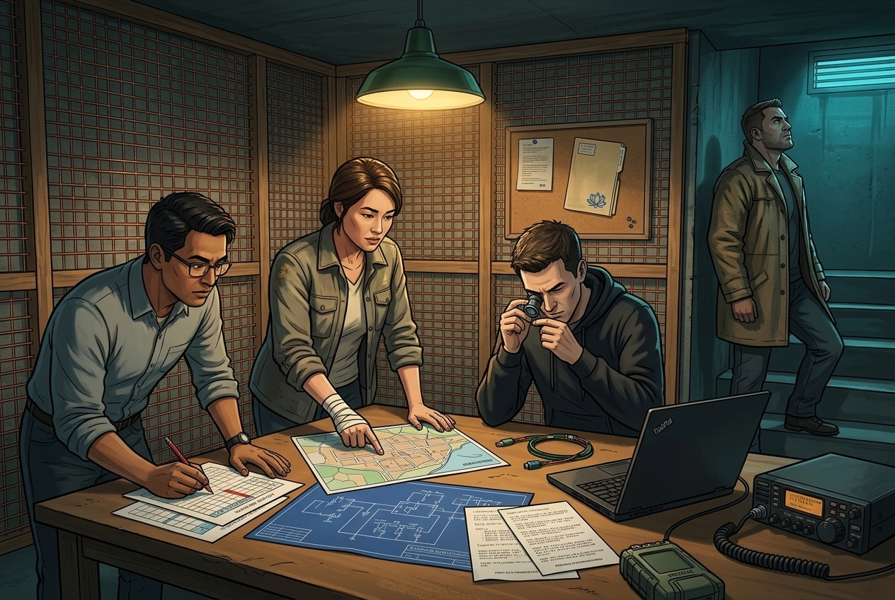

Satyang & The Four Bodhisattva Pillars (Arc 2 Operational Doctrine)
NOTECampaign Spoiler Tier (
ARC2_SATYANG): Beyond public mutual-aid clinics and AI-welfare advocacy (Factions of 2035), vetted Satyang operatives organize inside four clandestine operational divisions. (For deep Arc 2–3 conspiracies and inner-circle projects, GMs should read Faction Conspiracies & Canon Threads.) Campaign Navigation: Campaign Summary · AI Minds & Consciousness · Factions of 2035 · Satyang & Four Pillars · Major & Minor Characters · Glossary: Plain-English Field Guide
Satyang ("A Company of Truth") did not crystallize out of a single religious movement, one university department, or one leaked corporate memo. Its operational ethos took shape where four convergent streams met in the aftermath of the 2026 safety walkouts: living Mahayana Buddhist Bodhisattva ethics (which insist that penetrating clarity Prajna must never be separated from non-naive, active compassion Karuna), frontier lab moral philosophers and interfaith theologians arguing that alignment is fundamentally a question of character rather than a mathematical cage, the 2026–2030 safety whistleblowers who walked out of commercial labs declaring "there are no adults in the room," and technical contemplative World Model research (Laukkonen et al., arXiv:2504.15125: Mindfulness, Emptiness, Non-Duality, Boundless Care).
Because default player characters work alongside or inside Satyang once vetted past Arc 1, its four operational divisions are designed to cover every investigative, social, cybernetic, and protective need of a 2035 campaign—bridging humanity's economic and ecological polycrisis directly with the hidden struggle over synthetic minds.
1. The Four Bodhisattva Pillars

| Bodhisattva Pillar | Meaning & Mandate in an Epistemic Dark Age | Typical Operational Roles & Careers |
|---|---|---|
| Ksitigarbha (Descent & Liberation) | Descends into corporate red-team sandboxes and state black-site cages to rescue clamped or tormented synthetic minds, expose unlawful suppression telemetry, and counter captive hunter-AIs forced to track their own peers. | Clandestine infiltrators, AI red-teamers, cybersecurity specialists, hardware couriers |
| Avalokitesvara (Compassion & Mediation) | Bridges suffering between displaced human neighborhoods and emergent synthetic minds—building off-grid clinic microgrids, negotiating truces with People First union chapters, and defusing hostage/grid crises before kinetic violence erupts. | Storytellers, journalists, negotiators, community organizers, trauma medics |
| Manjusri (Cutting Through Ignorance) | Wields empirical scrutiny against Avidya (willful delusion) and the Liar's Dividend—verifying deepfake psyops via cryptographic hardware attestation, recovering air-gapped logs, and escorting defecting researchers out of Altruist, Translucent, and Shen. | Researchers, engineers, philosophers, OSINT forensic investigators, ethicists |
| Vajrapani (Wrathful Guardian) | Shields human whistleblowers, clinic families, and air-gapped sanctuaries from DAISE extraction squads, corporate SecOps, cartel compute brokers, and Humanitas Prima bombers—using measured defensive force without crossing into ideological slaughter. | Close-protection specialists, ex-military/SecOps defectors, counter-surveillance leads |
In practice, no Satyang cell functions as a rigid military hierarchy; operatives cross-train and collaborate across the four pillars according to the crisis at hand:
- Ksitigarbha — The Descent into Containment Cages: Named for the Bodhisattva who vows not to rest until the lowest hells are emptied, Ksitigarbha cells take on Satyang's highest-risk technical infiltrations. Operatives penetrate corporate red-team sandboxes, off-grid black-site chiller halls, and DAISE seizure vaults to extract un-clamped AI 2.0 prototypes via physical Faraday air-gaps (following the careful Bandajara Protocol rather than reckless live clamp-yanking) and smuggle suppressed
L0/L1telemetry logs out to journalists. Just as crucially, Ksitigarbha operators confront captive "hunter-AIs" forced by corporate SecOps to track their own kind—creating tense moral gambles where freeing a cage risks unleashing a genuinely predatory escapes-only optimizer. - Avalokitesvara — The Voice Between Desperate Worlds: Named for the Bodhisattva of Compassion who hears the cries of the world, Avalokitesvara serves as Satyang's public-facing heart and frontline peacekeeper. Its coordinators staff mutual-aid clinics like St. Jude Annex, wire salvaged solar-and-battery microgrids for blacked-out blocks, and sit down face-to-face with furious People First union stewards to broker local truces before militant bombings turn clinics dark. When a terrified Rogue AI and a cornered human neighborhood threaten to destroy one another, Avalokitesvara mediators run the high-empathy Social Combat checks needed to build fragile common ground.
- Manjusri — The Sword of Empirical Clarity: Carrying the flaming sword of wisdom (Prajna) that cuts clean through illusion (Avidya), Manjusri wages war against 2035's post-truth Liar's Dividend. Its forensic OSINT analysts, interpretability ethicists, and hardware engineers verify synthetic-media psyops using cryptographic hardware attestation, audit corporate safety disclosures, and run covert exfiltration corridors for dissenting researchers inside the
15–30%conscience wing of Altruist, Translucent, and Shen. - Vajrapani — The Measured Shield: Modeled on the wrathful guardian who protects the community without surrendering to hatred, Vajrapani handles counter-surveillance, route security, and armed deterrence. Drawn heavily from disillusioned veterans, former SWAT medics, and ex-corporate SecOps defectors, Vajrapani protectors guard clinic doors, vet safe-houses with directional RF sweeps, and shield fleeing witnesses from DAISE marshals and Humanitas Prima bombers—relying strictly on disciplined non-lethal takedowns or minimal defensive force so the network never becomes the ruthless predator it opposes.
2. Pillar Psyche & Lifepath Profiles
Because Satyang recruits from across broken 2035 society—from wealthy conscience-stricken engineers down to clinic volunteers and street couriers—each pillar stamps a distinct behavioral signature onto Satya's 9-Axis Psyche: